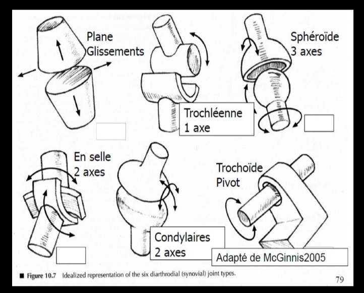

Articulations
Une articulation est la jonction entre deux ou plusieurs os. Sa forme détermine le type et l'amplitude des mouvements possibles. Trois grandes familles existent : fibreuses (immobiles), cartilagineuses (semi-mobiles) et synoviales (mobiles). En ergonomie, les articulations synoviales sont les plus étudiées car elles supportent l'essentiel des mouvements du travail et la majorité des TMS s'y manifestent.
Table des matières
- Trois familles d'articulations
- Les articulations synoviales
- Six types d'articulations synoviales
- Amplitudes articulaires
- Application terrain
- Ressources
Trois familles d'articulations
| Famille | Mobilité | Exemples |
|---|---|---|
| Fibreuses | Immobiles | Sutures crâniennes |
| Cartilagineuses | Semi-mobiles | Articulations intervertébrales (voir Anatomie et biomécanique du dos) |
| Synoviales | Mobiles | Articulation gléno-humérale (épaule), coxo-fémorale (hanche) |
Les articulations synoviales
 Toucher l'image pour l'agrandir
Toucher l'image pour l'agrandir
Les articulations synoviales se caractérisent par la présence de
- Une capsule articulaire qui enveloppe l'articulation.
- Du cartilage articulaire qui recouvre les surfaces osseuses en contact.
- Des ligaments qui stabilisent l'articulation.
- Du liquide synovial sécrété par la capsule, qui lubrifie l'articulation.
Ce sont elles qui rendent possible le mouvement humain dans toute sa variété et c'est sur leurs amplitudes que reposent les grilles d'évaluation posturale.
Six types d'articulations synoviales
Les mouvements possibles autour d'une articulation sont dictés par la forme de celle-ci.
{kind=link}

Toucher l'image pour l'agrandir| Type | Forme | Exemples | Mouvements |
|---|---|---|---|
| Plane | Surfaces planes | Articulations carpiennes | Glissement |
| Trochléenne | Poulie | Coude, interphalangiennes | Flexion-extension |
| Trochoïde | Pivot | Atlas-axis, radio-ulnaire | Rotation |
| Condylaire | Ellipsoïde | Poignet (radio-carpienne) | Flexion-extension, abduction-adduction |
| En selle | Selle | Trapézo-métacarpienne (pouce) | Flexion-extension, abduction-adduction |
| Sphéroïde | Sphère dans cupule | Épaule, hanche | Tous les mouvements (3 degrés de liberté) |
Amplitudes articulaires
Pour chaque articulation, on peut définir
- Une posture neutre où les contraintes sur les structures sont minimales.
- Une amplitude articulaire maximale au-delà de laquelle le mouvement n'est plus possible.
- Une amplitude de confort dans laquelle la posture n'est pas considérée comme un facteur de risque de TMS.
Une posture devient contraignante (voir Postures contraignantes) lorsqu'elle
- Étire excessivement les structures articulaires.
- Comprime excessivement les structures articulaires.
- Demande un effort important pour être maintenue de façon statique.
Plus une posture s'approche des limites de l'amplitude articulaire, plus elle est contraignante.
Application terrain
Les postes miniers sollicitent fréquemment des articulations en position extrême.
| Articulation | Sollicitation typique en mine |
|---|---|
| Épaule (sphéroïde) | Forage bras au-dessus de la tête, boulonnage de toit |
| Coude (trochléenne) | Manutention (pour toi) d'écailleurs, soutènement |
| Poignet (condylaire) | Préhension d'outils vibrants, manipulation de pinces |
| Rachis (intervertébrales) | Flexion-torsion lors de la manutention, Vibrations corps entier |
| Hanche (sphéroïde) | Posture accroupie, position assise prolongée en cabine |
| Genou (trochléenne) | Position à genoux pour pose de tirants, sol inégal |
La connaissance des amplitudes de confort permet au conseiller en ergonomie de prioriser les interventions : un boulonneur qui travaille en flexion d'épaule à 150° pendant un quart de 12 h représente un risque qualitativement différent d'un opérateur de jumbo en cabine assise dans une amplitude confortable.
Ressources
| Document | Type | Source |
|---|---|---|
| Cours SST 1162 - S2 - Les articulations | Cours | UQAT |
| Norme ISO 11226 (postures statiques) | Norme | ISO |
Articles wiki connexes
Pages qui pointent ici (15)
- 🏠 Wiki Ergonomie, mines Ergonomie
- 📖 Glossaire ergonomie Ergonomie
- Analyse posturale Ergonomie
- Anatomie et biomécanique Ergonomie
- Anatomie et biomécanique du dos Ergonomie
- Biomécanique Ergonomie
- Facteurs de risque des TMS Ergonomie
- Postures contraignantes Ergonomie
- Système musculaire Ergonomie
- Système musculosquelettique Ergonomie
- TMS (troubles musculosquelettiques) Ergonomie
- TMS par région anatomique Ergonomie
- Travail répétitif (pour toi) Ergonomie
- Travail sédentaire Ergonomie
- Vibrations Ergonomie